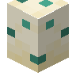

aruori6
图鉴
首页
标签目录
GitHub
简单
精确
首页
›
标签目录
›
#caupona:eggs
#caupona:eggs
物品标签 · 9 个已收录成员 · 另有 2 个未收录 id
标签成员
(9)
鸡蛋
minecraft:egg
蜗牛卵
caupona:snail_block
蓝色鸡蛋
minecraft:blue_egg
棕色鸡蛋
minecraft:brown_egg
火鸡蛋
autumnity:turkey_egg
鸭蛋
environmental:duck_egg
煎蛋
kaleidoscope_cookery:fried_egg

海龟蛋
minecraft:turtle_egg
熟鸡蛋
bountifulfares:cooked_egg
使用该标签的配方
无
未收录条目
(2)
c:eggs
c:egg